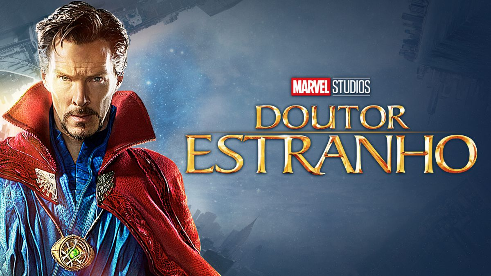
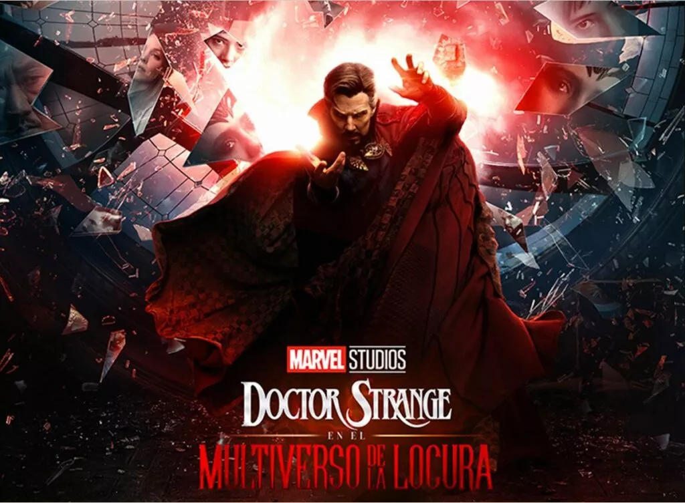

Doutor Estranho, mestre das artes místicas, tem o dever de proteger a Terra contra forças inimigas mágicas iminentes. Sua primeira aparição foi em seu próprio filme, interpretado pelo ator Benedict Cumberbatch.
Doutor Stephen Strange é um excepcional e arrogante neurocirurgião. Quando perde o movimento de suas mãos em um acidente de carro, Dr. Strange vai a procura de uma cura e encontra a Anciã, que lhe mostra diferentes dimensões e o plano astral.
Após os acontecimento de Homem-Aranha: Sem Volta Para Casa, Doutor Esranho encontra no meio de uma confusão no meio de um casamento uma garota com o poder de viajar para outros multiversos. Esta garota está sendo perseguida por uma ameaça desconhecida, então, Doutor Estranho pede ajuda a uma antiga colega de trabalho, Wanda Maximoff, ou, como prefere ser chamada, Feiticeira Escarlate.
